Customize Electronic reporting configurations to generate an electronic document
The Electronic reporting (ER) framework lets you upload the ER configurations that Microsoft provides into your Microsoft Dynamics 365 Finance instance. In this way, the Microsoft-provided configurations can serve as the ER solution that is used to generate electronic customer invoices (e-invoices). You can use this ER solution to configure your custom ER solution to access your custom database fields and generate e-invoices that are compliant with your specific requirements, without having to edit the source code.
Overview
For the example in this topic, you must specify a federal tax identification code as a new custom attribute of every customer that you electronically invoice. Therefore, you must customize the structure of the invoice that is currently used, by adding a new item that must be filled with the tax code in every e-invoice that is generated.
The procedures in this topic explain how a user in the System Administrator, Electronic Reporting Developer, or Electronic Reporting Functional Consultant role can perform the following tasks in your Finance instance:
- Configure the minimal set of ER parameters that is required to start to use the ER framework.
- Import the initial versions of the standard ER configurations that are provided to generate e-invoices.
- Configure the Accounts receivable parameters to start to use the standard ER configurations.
- Configure the legal entity parameters to invoice customers.
- Prepare a customer record for electronic invoicing.
- Add, post, and send a customer invoice by using the standard ER configurations.
- Add a custom database field to manage a federal tax identification code for customers.
- Refresh the ER metadata to enable database changes for the ER model mapping designer.
- Design the custom ER configurations to generate e-invoices that contain the new tax code.
- Configure the Accounts receivable parameters to start to use the custom ER configurations.
- Update a customer record for electronic invoicing.
- Add, post, and send a customer invoice by using the custom ER configurations.
- Import the new versions of the standard ER configurations that are provided to generate e-invoices.
- Adopt the changes to the new versions of the standard ER configurations in your custom ER configurations.
- Add, post, and send a customer invoice by using the new versions of the custom ER configurations.
All these procedures can be completed in the DEMF company.
Configure the ER framework
As a user in the Electronic Reporting Functional Consultant or Electronic Reporting Developer role, you must configure the minimal set of ER parameters. You can then start to use the ER framework to design custom versions of the standard configurations of the ER solution that is used to generate e-invoices.
Configure ER parameters
- Go to Organization administration > Workspaces > Electronic reporting.
- On the Localization configurations page, in the Related links section, select Electronic reporting parameters.
- On the Electronic reporting parameters page, on the General tab, set the Enable design mode option to Yes.
- On the Attachments tab, in the Configurations field, select File.
- In the Job archive, Temporary, Baseline, and Others fields, select the File type.
For more information about ER parameters, see Configure the ER framework (This is an external linThis link was changed due to HTMLfromRepoGenerator).
Activate an ER configuration provider
Every ER configuration that is added is marked as owned by an ER configuration provider. The ER configuration provider that is activated in the Electronic reporting workspace is used for this purpose. Therefore, you must activate an ER configuration provider in the Electronic reporting workspace before you start to add or edit ER configurations.
Note
Only the owner of an ER configuration can edit it. Therefore, before an ER configuration can be edited, the appropriate ER configuration provider must be activated in the Electronic reporting workspace.
Review the list of ER configuration providers
- Go to Organization administration > Workspaces > Electronic reporting.
- On the Localization configurations page, in the Related links section, select Configuration providers.
- On the Configuration provider table page, each provider record has a unique name and URL. Review the contents of this page. If a record for Litware, Inc. (
https://www.litware.com) already exists, skip the next procedure, Add a new ER configuration provider.
Add a new ER configuration provider
- Go to Organization administration > Workspaces > Electronic reporting.
- On the Localization configurations page, in the Related links section, select Configuration providers.
- On the Configuration providers page, select New.
- In the Name field, enter Litware, Inc.
- In the Internet address field, enter
https://www.litware.com. - Select Save.
Activate an ER configuration provider
- Go to Organization administration > Workspaces > Electronic reporting.
- On the Localization configurations page, in the Configuration providers section, select the Litware, Inc. tile, and then select Set active.
For more information about ER configuration providers, see Create configuration providers and mark them as active.
Import the initial versions of standard ER configurations
To add the standard ER configurations to your current Finance instance, you must import them from the ER repository that was configured for that instance.
- Go to Organization administration > Workspaces > Electronic reporting.
- On the Localization configurations page, in the Configuration providers section, select the Microsoft tile, and then select Repositories to view the list of repositories for the Microsoft provider.
- On the Configuration repositories page, select the repository of the Global type, and then select Open. If you're prompted for authorization to connect to Regulatory Configuration Service, follow the authorization instructions.
- On the Configuration repository page, in the configuration tree in the left pane, select the Peppol Sales Invoice format configuration.
- On the Versions FastTab, select version 11.2.2.
- Select Import to download the selected version from the Global repository.
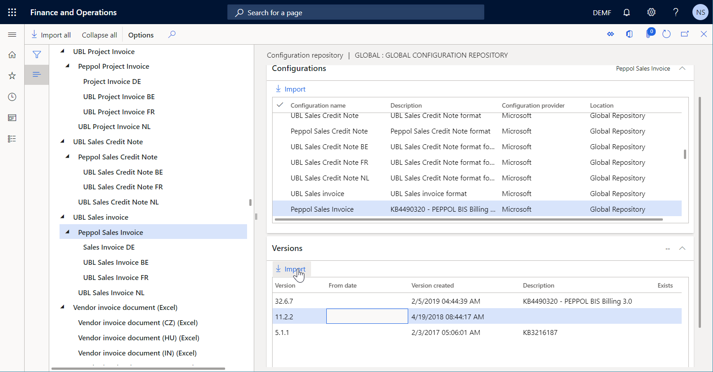
Tip
If you have trouble accessing the Global repository, you can download configurations from Microsoft Dynamics Lifecycle Services (LCS) instead.
Review the imported ER configurations
- Go to Organization administration > Workspaces > Electronic reporting.
- On the Localization configurations page, in the Configurations section, select the Reporting configurations tile.
- On the Configurations page, expand the Configuration components FastTab.
- In the configuration tree in the left pane, expand Invoice model, and then expand UBL Sales invoice.
Notice that, in addition to the selected Peppol Sales Invoice ER format, other required ER configurations were imported. Because new versions of ER configurations are constantly published to the Global repository and LCS to keep the corresponding solutions compliant with new requirements, the latest versions of the required data model configuration and its model mapping configurations were imported.
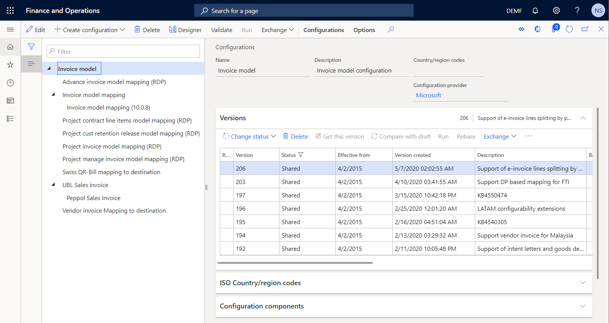
To simulate the state that ER configurations in the current Finance instance would be in if you imported version 11.2.2 of the Peppol Sales Invoice ER format in the past (for example, on August 7, 2019), follow these steps.
- On the Action Pane, select Delete to delete all ER configurations that were published after August 7, 2019. The only Invoice model, Invoice model mapping (initially named Customer invoice model mapping), UBL Sales invoice and Peppol Sales Invoice configurations must be left.
- For the remained ER configurations, on the Versions FastTab, select Delete to delete all versions of ER configurations that were published after August 7, 2019.
Then verify that the following configurations are available in the configuration tree:
Invoice model ER data model configuration (initially named Customer invoice model):
- Version 11 contains version 10 of the data model ER component that represents the data structure of the invoicing business domain. This ER configuration has been imported as an ancestor of the Peppol Sales Invoice ER format that was selected for import.
- Version 50 contains version 31 of the data model ER component. This ER configuration has been imported as an ancestor of the August 7, 2019, version of the Invoice model mapping ER model mapping configuration.
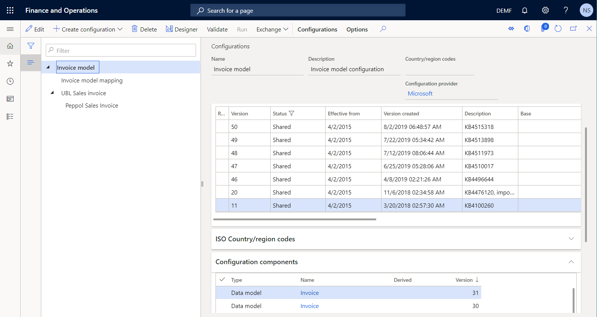
Tip
If you don't see version 50 of this data model, open the Global repository, and import version 50.19 of the Invoice model mapping ER configuration.
Invoice model mapping ER model mapping configuration (initially named Customer invoice model mapping):
- Version 50.19 has been imported as the latest implementation of version 50 of the Invoice model ER data model configuration. It contains two model mapping ER components that describe how the data model is filled in with application data at runtime.
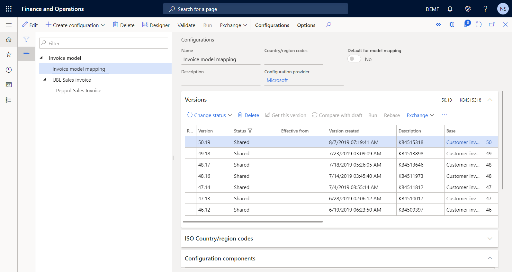
Tip
If you don't see version 50.19 of this model mapping, open the Global repository, and import version 50.19 of the Invoice model mapping ER configuration.
UBL Sales invoice ER format configuration:
- Version 11.2 contains the format and format mapping ER components. The format component specifies the report layout. The format mapping component contains the model data source and specifies how this data source is used to fill in the report layout at runtime. This ER format was configured to generate e-invoices in Universal Business Language (UBL) format. It has been imported as a parent of the Peppol Sales Invoice ER format that was selected for import.
Peppol Sales Invoice ER format configuration:
- Version 11.2.2 contains the format and format mapping ER components that were configured to generate e-invoices in Pan-European Public Procurement OnLine (PEPPOL) format.
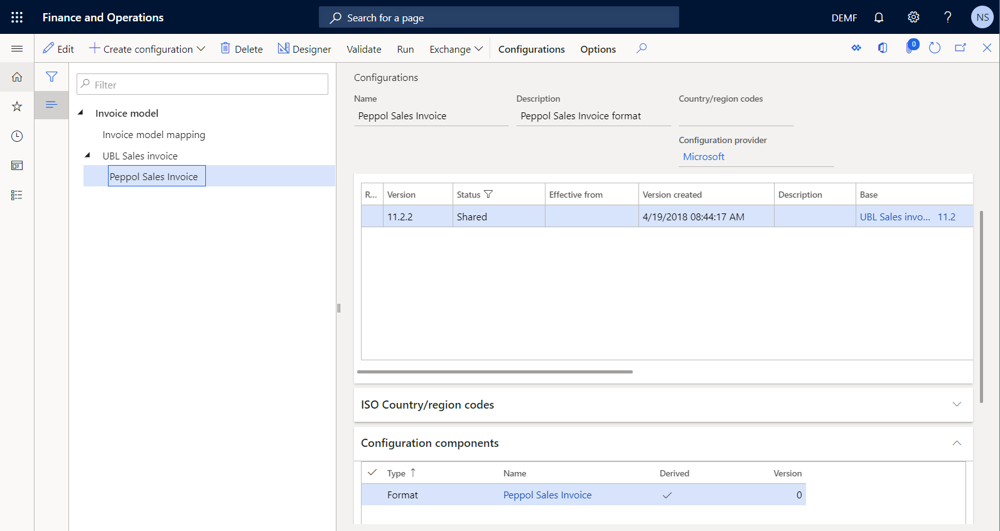
Configure the Accounts receivable parameters
- Go to Accounts receivable > Setup > Accounts receivable parameters.
- On the Electronic documents tab, on the Electronic reporting FastTab, in the Sales and Free text invoice field, select Peppol Sales Invoice.
- Select Save.
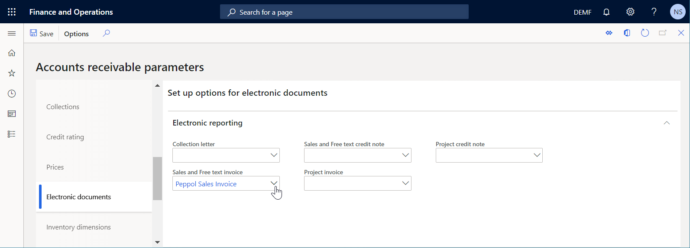
Configure the legal entity parameters
- Go to Organization administration > Organizations > Legal entities.
- For the selected DEMF company, on the Bank account information FastTab, in the Routing number field, enter 1234.
- Select Save.
- Close the Legal entities page.
Prepare a customer record
- Go to Accounts receivable > Customers > All customers.
- On the All customers page, select the DE-014 customer account link.
Add a customer contact
- Go to Accounts receivable > Customers > All customers.
- On the Action Pane, on the Customer tab, in the Accounts group, select Contacts.
- Select Add contacts.
- On the Contacts page, in the First name field, open the lookup, select Adam Carter, and then select Select to close the lookup.
- Select Save.
- Close the Contacts page.
Define a primary contact
- Go to Accounts receivable > Customers > All customers.
- On the Sales demographics FastTab, in the Primary contact field, select Adam Carter.
Set the e-invoicing option
- Go to Accounts receivable > Customers > All customers.
- On the Invoice and delivery FastTab, set the eInvoice option to Yes.
- Select Save.
- Close the All customers page.
Process a customer invoice by using the standard ER configurations
You can now use the standard ER configurations that you imported to electronically send a free text invoice to a customer.
Add a new invoice
Go to Accounts receivable > Invoices > All free text invoices.
On the Free text invoice page, select New.
On the Free text invoice header FastTab, in the Customer account field, select DE-014.
On the Invoice lines FastTab, an invoice line is automatically added. On this line, set the following fields:
- In the Description field, enter Notebook.
- In the Main account field, select 401100.
- In the Unit price field, enter 1000.
Select Save.
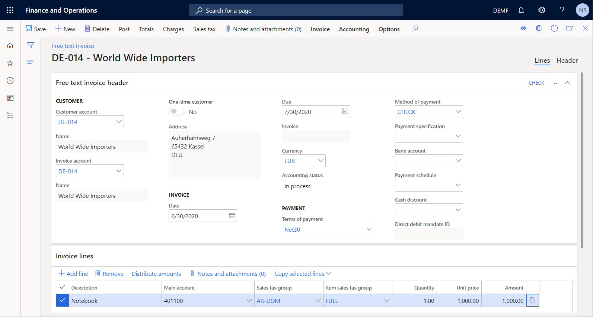
For more information, see Create a free text invoice.
Post a new invoice
- Go to Accounts receivable > Invoices > All free text invoices.
- On the Free text invoice page, on the Action Pane, select Post.
- In the Post free text invoice dialog box, select OK.
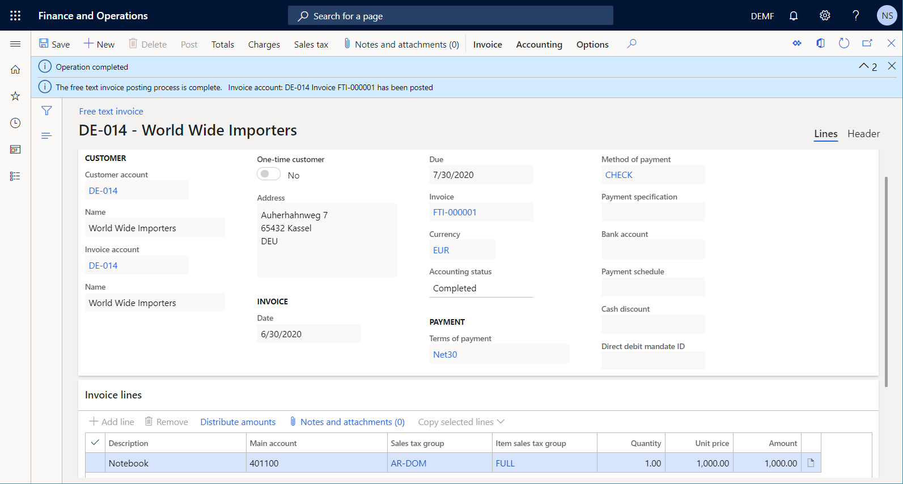
Send a posted invoice
Go to Accounts receivable > Invoices > All free text invoices.
On the Free text invoice page, on the Action Pane, in the Document group, select Send > Original.
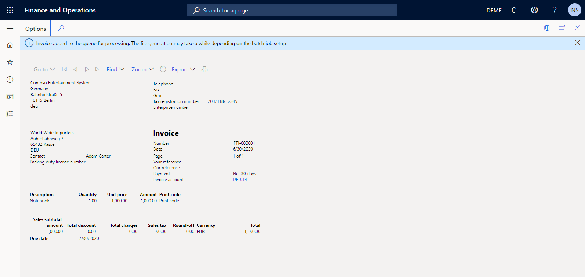
Close the Free text invoice page.
Analyze a generated e-invoice
Go to Organization administration > Electronic reporting > Electronic reporting jobs.
On the Electronic reporting jobs page, select the initial record that has the task description Send the eInvoice XML.
Select Show files to access the list of generated files.
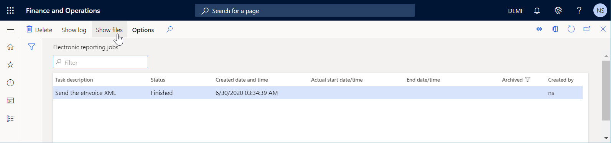
Select Open to download the e-invoice XML file that is generated.
Analyze the e-invoice XML file. Notice that the customer tax schema is currently represented by the schemeID and schemeAgencyID XML attributes. Also notice that the cbc:CustomizationID XML element currently contains the following text:
urn:www.cenbii.eu:transaction:biicoretrdm010:ver1.0:# urn:www.peppol.eu:bis:peppol5a:ver1.0.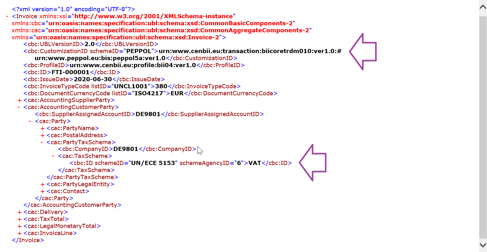
Add a custom database field
You can use the Custom field feature to do the following customization in the current Finance instance:
- Customize the database structure by adding a new custom database field that stores a federal tax identification code for every customer.
- Customize the Customer page by adding a new data entry field that can be used to enter a tax code value in the new custom database field.
Follow these steps to do the customization.
Go to Accounts receivables > Customers > All customers.
On the All customers page, select the DE-014 customer account link.
On the General FastTab, right-click in any blank area under the Language field, and then select Personalize: UpperGroup.
The contents of the General FastTab are highlighted, and a Personalize menu appears.
On the Personalize menu, select Add a field.
In the Add columns dialog box, select Create new field.
In the Create new field dialog box, in the Table name field, select Customers.
In the Name prefix field, enter FederalTaxID.
Note
The whole field name has been automatically defined as FederalTaxID_Custom.
In the Label field, enter Federal Tax ID.
In the Type field, select Text.
In the Length field, enter 20.
Select Save.
In the message box that appears, select Yes to confirm that you want to create a new FederalTaxID field entry for the Customers table.
Select Insert to add the FederalTaxID_Custom field to the current page.
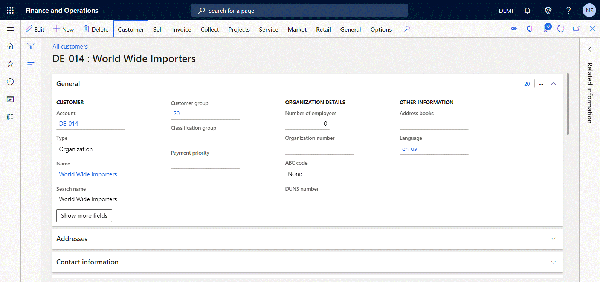
Close the All customers page.
Refresh the ER metadata
You must refresh the ER metadata to make the custom field that you added visible (This is an external linThis link was changed due to HTMLfromRepoGenerator) in the ER model mapping designer.
- Go to Organization administration > Electronic reporting > Rebuild table references.
- In the Update data model dialog box, select OK.
Design the custom ER configurations
You can use the Microsoft-provided ER configurations to design your custom ER configurations so that they generate e-invoices that contain the new tax code.
Customize the data model configuration
As a user in the Electronic Reporting Functional Consultant role, you can design your custom ER data model.
Add a custom data model configuration
- Go to Organization administration > Electronic reporting > Configurations.
- On the Configurations page, in the configuration tree in the left pane, select Customer invoice model.
- On the Action Pane, select Create configuration.
- In the drop-down dialog box, in the New field, select Derive from Name: Customer invoice model, Microsoft to indicate that your new custom ER data model configuration should be based on the ER data model configuration.
- In the Name field, enter Invoice model (Litware).
- Select Create configuration to add the new ER configuration.
You can now use the ER data model designer to edit version 50.1 of the Invoice model (Litware) ER configuration in Draft status.
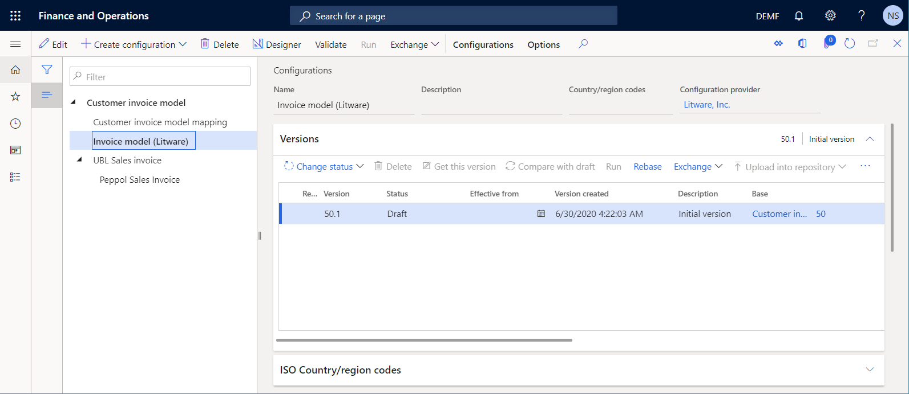
Configure a custom data model
You must modify your custom data model by adding a new field to provide the value of a federal tax identification code. This code is part of the customer data for every ER format that will use this data model as a data source.
On the Configurations page, in the configuration tree in the left pane, select Invoice model (Litware).
On the Versions FastTab, select version 50.1 of the selected ER data model configuration in Draft status.
On the Action Pane, select Designer for the selected configuration version.
On the Data model designer page, in the data model tree, select Customer information (Customer).
Select New.
In the drop-down dialog box, in the New node as a field, accept the default value, Child of an active node.
In the Name field, enter FederalTaxID_Litware.
In the Item type field, accept the default value, String.
Select Add, and then select Save.
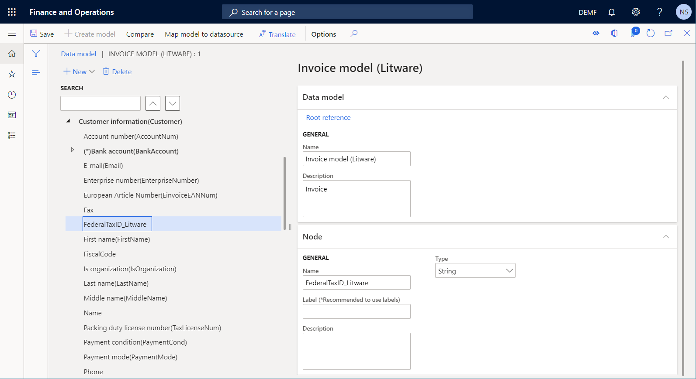
Note
The Label and Description fields describe the purpose of the new field. You can fill in these fields in multiple languages. For more information, see Design multilingual reports in Electronic reporting.
Close the Data model designer page.
Complete a custom data model configuration
You must complete your work with version 50.1 of your custom ER data model configuration to make it available so that other custom ER configurations can be added.
- Go to Organization administration > Electronic reporting > Configurations.
- On the Configurations page, in the configuration tree in the left pane, expand Invoice model, and select Invoice model (Litware).
- On the Versions FastTab, select Change status > Complete, and then select OK.
The status of version 50.1 is changed from Draft to Completed, and the version becomes read-only. A new editable version, 50.2, is added and has a status of Draft. You can use this version to make further changes in your custom ER data model configuration.
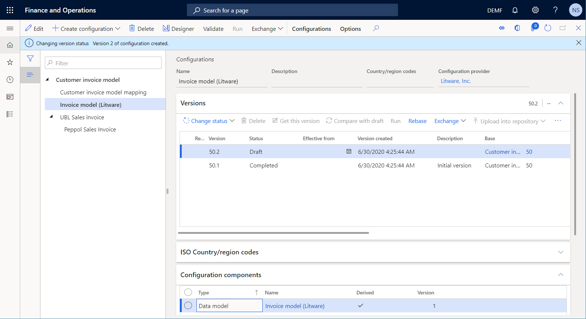
Customize the model mapping configuration
As a user in the Electronic Reporting Developer role, you can design your custom ER model mapping.
Add a custom model mapping configuration
Go to Organization administration > Electronic reporting > Configurations.
On the Configurations page, in the configuration tree in the left pane, expand Customer invoice model, and select Customer invoice model mapping.
On the Action Pane, select Create configuration.
In the drop-down dialog box, in the New field, select Derive from Name: Customer invoice model mapping, Microsoft to indicate that your new custom ER model mapping configuration should be based on the ER model mapping configuration.
In the Name field, enter Invoice model mapping (Litware).
In the Target model field, select Invoice model (Litware).
Important
This step is very important. If you omit it, you won't be able to use your custom data model in the configured model mapping.
Select Create configuration to add the new ER configuration.
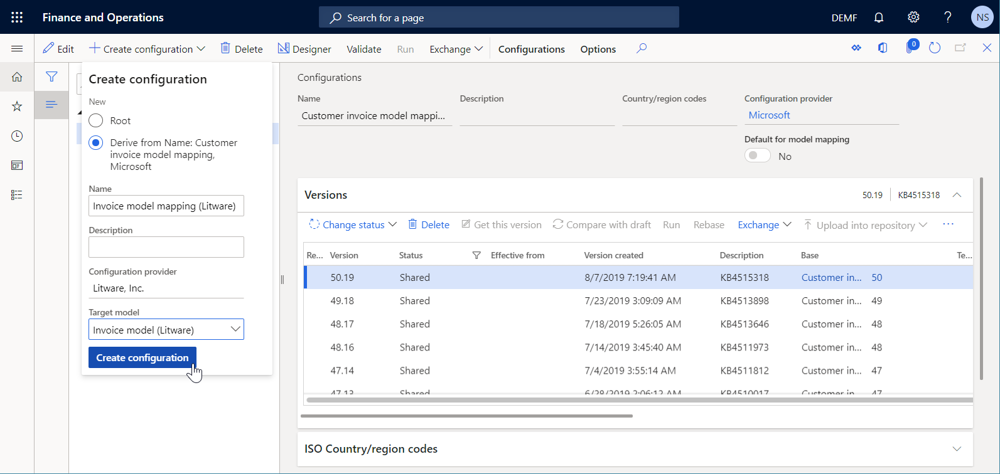
Configure a custom model mapping
You must modify your custom model mapping and specify how the custom FederalTaxID_Litware field of the custom data model should be filled in with application data at runtime.
Go to Organization administration > Electronic reporting > Configurations.
On the Configurations page, in the configuration tree in the left pane, expand Customer invoice model > Customer invoice model mapping, and select Invoice model mapping (Litware).
On the Action Pane, select Designer.
On the Model to datasource mapping page, select the Customer invoice mapping.
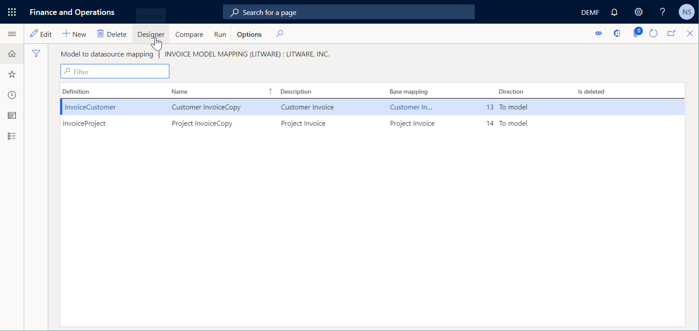
Select Designer.
On the Model mapping designer page, in the Data sources pane, expand the CustInvoiceJour data source that represents the CustInvoiceJour application table.
Under CustInvoiceJour, expand Relations to review the list of relations of the many-to-one (N:1) type for the CustInvoiceJour table.
Under CustInvoiceJour > Relations, expand Customers (CustTable) to access the fields and relations of the Customers (CustTable) table.
Select the FederalTaxID_Custom data source field that you implemented earlier.
In the Data model pane, expand Customer information (Customer), and select the FederalTaxID_Litware data model field.
Select Bind.
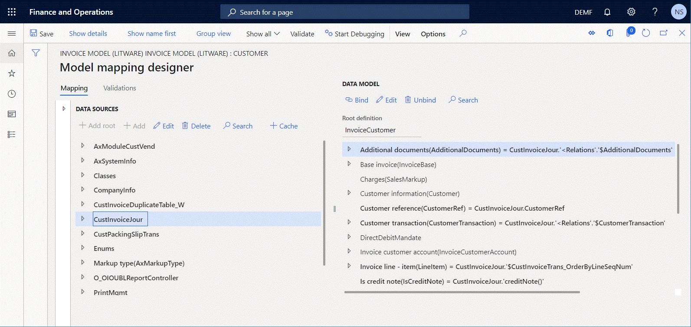
Select Save.
Close the Model mapping designer page.
Close the Model to datasource mapping page.
Complete a custom model mapping configuration
You must complete your work with version 50.19.1 of your custom ER model mapping configuration to make it available for use.
- Go to Organization administration > Electronic reporting > Configurations.
- On the Configurations page, in the configuration tree in the left pane, expand Customer invoice model > Customer invoice model mapping, and select Invoice model mapping (Litware).
- On the Versions FastTab, select Change status > Complete, and then select OK.
The status of version 50.19.1 is changed from Draft to Completed, and the version becomes read-only. A new editable version, 50.19.2, is added and has a status of Draft. You can use this version to make further changes in your custom ER model mapping configuration.
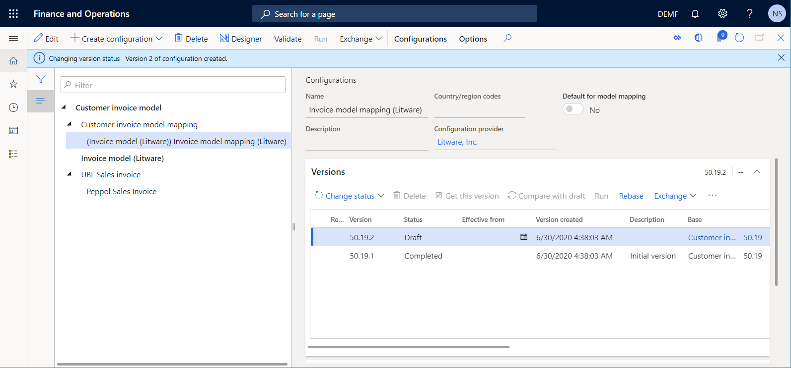
Note
The supported configuration lifecycle doesn't cover the lifecycle of database changes. If you export version 50.19.1 of the Invoice model mapping (Litware) configuration from the current Finance instance and try to import it into another instance that doesn't contain the custom FederalTaxID_Custom field in the CustTable table, an exception will occur. The exception will state that the imported ER configuration isn't compatible with the metadata of the target Finance instance.
Customize the format configuration
As a user in the Electronic Reporting Functional Consultant role, you can design your custom ER format.
Add a custom format configuration
Go to Organization administration > Electronic reporting > Configurations.
On the Configurations page, in the configuration tree in the left pane, expand Customer invoice model > UBL Sales invoice, and select Peppol Sales Invoice.
On the Action Pane, select Create configuration.
In the drop-down dialog box, in the New field, select Derive from Name: Peppol Sales Invoice, Microsoft to indicate that your custom ER format configuration should be based on the ER format configuration.
In the Name field, enter Peppol Sales Invoice (Litware).
In the Data model field, select Invoice model (Litware) to use your custom data model and model mapping components.
Note
This step is very important. If you omit it, you won't be able to use your custom data model in the configured format.
In the Data model field, select the InvoiceCustomer root definition.
Select Create configuration to add the new ER configuration.
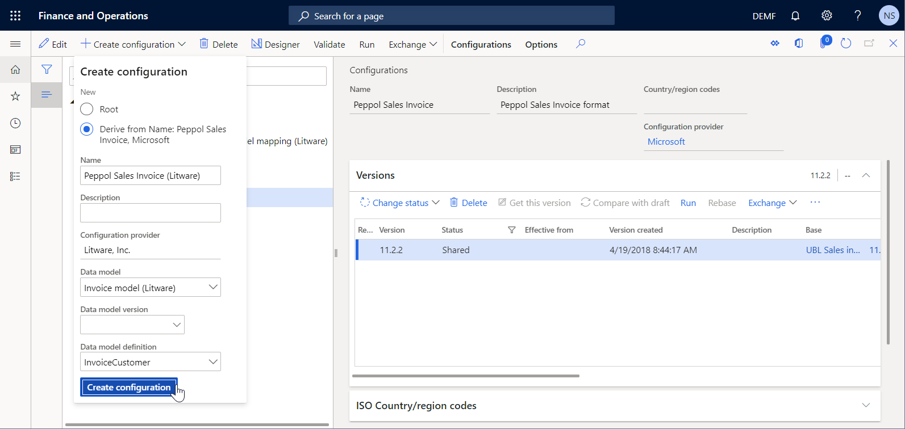
You can now use the ER Operations designer to edit version 11.2.2.1 of the Peppol Sales Invoice (Litware) ER configuration in Draft status.
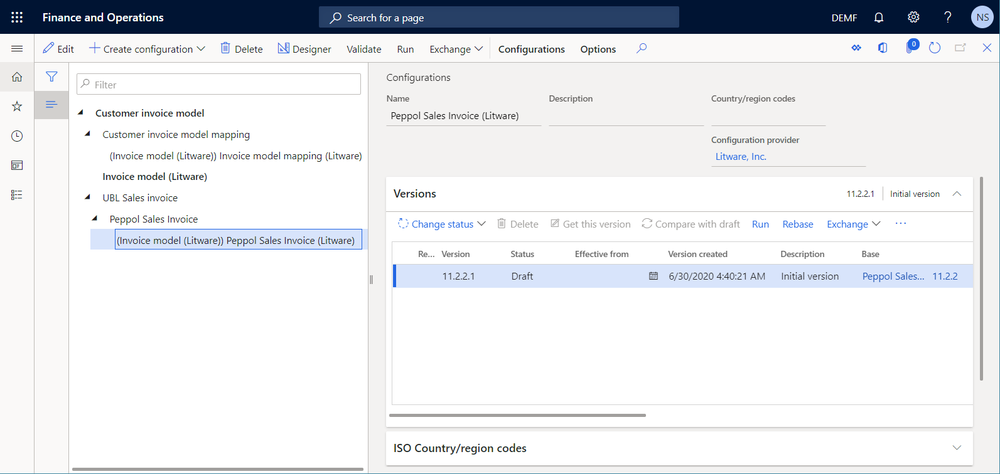
Configure a custom format
You must modify your custom format by adding a new format element to fill in the value of an invoiced customer's federal tax identification code.
- Go to Organization administration > Electronic reporting > Configurations.
- On the Configurations page, in the configuration tree in the left pane, expand Customer invoice model > UBL Sales invoice > Peppol Sales Invoice, and select Peppol Sales Invoice (Litware).
- On the Action Pane, select Designer.
- In the format tree, expand XMLHeader > Invoice > cac:AccountingCustomerParty > cac:Party > cac:PartyTaxScheme > cac:TaxScheme, and select cbc:ID.
- Select Add, and then select XML > Attribute.
- In the Component property dialog box, in the Name field, enter FederalTaxID.
- Select OK to add a new format element to create a new FederalTaxID XML attribute in a generated XML file.
- In the format tree, under XMLHeader > Invoice > cac:AccountingCustomerParty > cac:Party > cac:PartyTaxScheme > cac:TaxScheme > cbc:ID, select FederalTaxID.
- Select Move up.
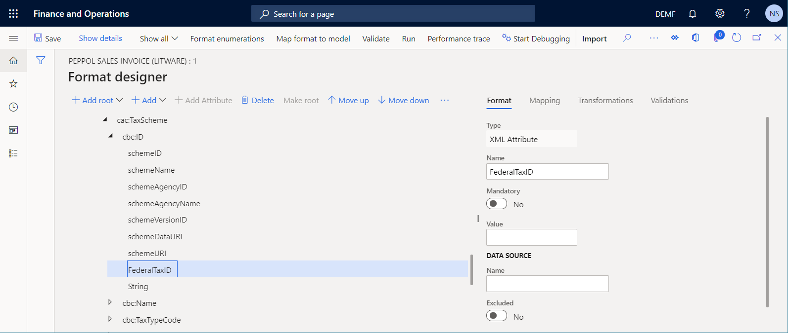
Configure a custom format mapping
On the Format designer page, on the Mapping tab, expand the Invoice data source of the Model type.
Under Invoice, expand Customer information (Customer), and select FederalTaxID_Litware.
Select Bind.
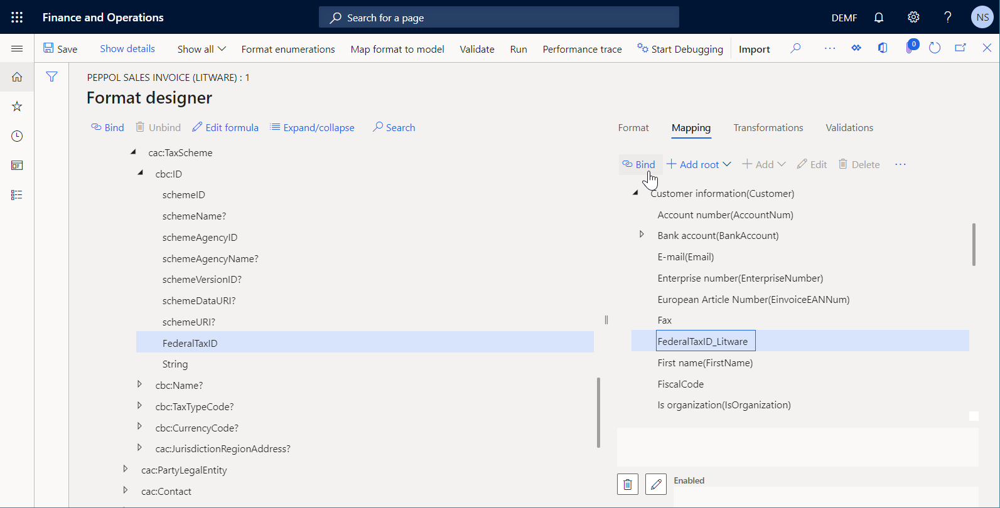
Select the Invoice data source of the Model type, and then select Edit.
In the Version field, select version 1 of your custom data model, and then select OK.
Select Save.
Close the Format designer page.
Complete a custom format configuration
You must complete your work with version 11.2.2.1 of your custom ER format configuration to make it available for use.
- Go to Organization administration > Electronic reporting > Configurations.
- On the Configurations page, in the configuration tree in the left pane, expand Customer invoice model > UBL Sales invoice > Peppol Sales Invoice, and select Peppol Sales Invoice (Litware).
- On the Versions FastTab, select Change status > Complete, and then select OK.
The status of version 11.2.2.1 is changed from Draft to Completed, and the version becomes read-only. A new editable version, 11.2.2.2, is added and has a status of Draft. You can use this version to make further changes in your custom ER format configuration.
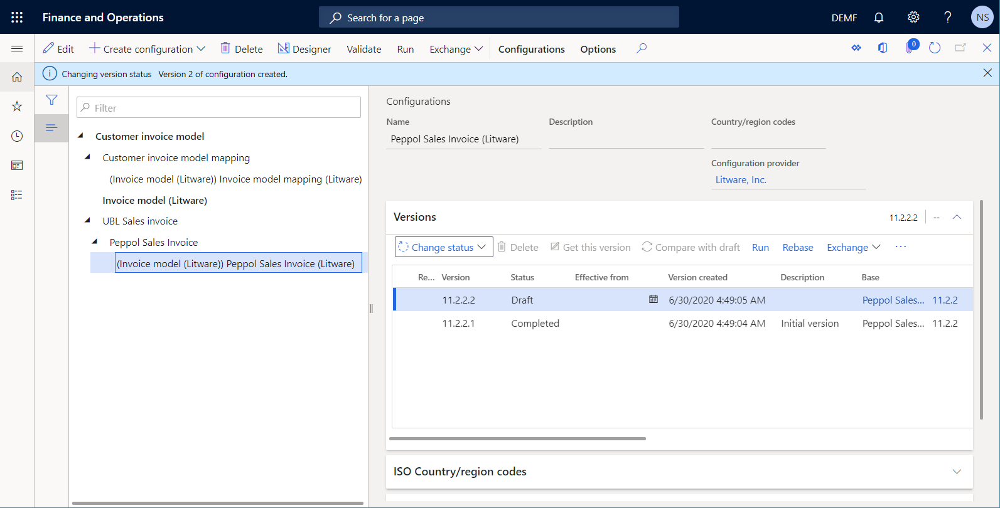
Configure the Accounts receivable parameters to start to use custom ER configurations
- Go to Accounts receivable > Setup > Accounts receivable parameters.
- On the Electronic documents tab, on the Electronic reporting FastTab, in the Sales and Free text invoice field, select Peppol Sales Invoice (Litware).
- Select Save.
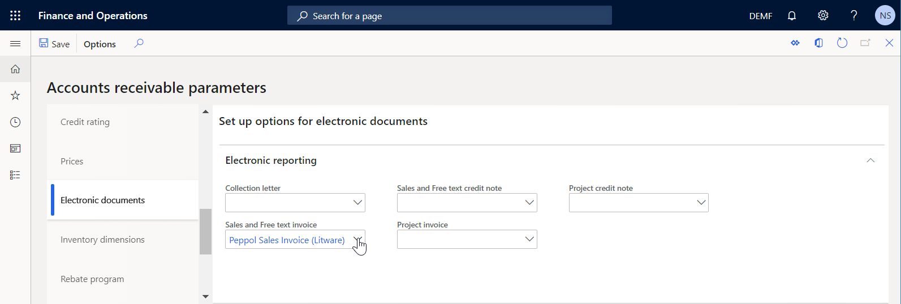
Update a customer record by adding a federal tax identification code
Go to Accounts receivable > Customers > All customers.
On the All customers page, select the DE-014 customer account link.
On the General FastTab, in the Federal Tax ID field, enter LITWARE-6789.
Select Save.
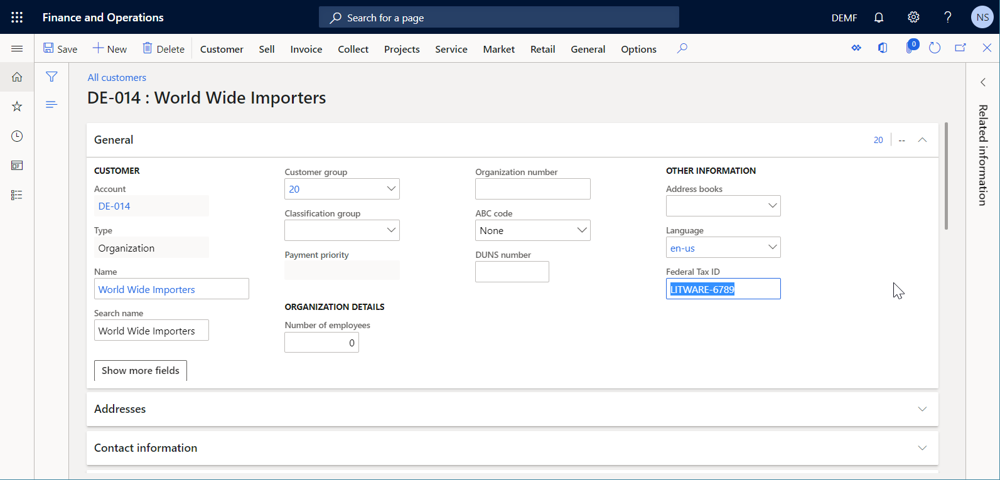
Close the All customers page.
Process a customer invoice by using custom ER configurations
Select and send a posted invoice
- Go to Accounts receivable > Invoices > All free text invoices.
- On the Free text invoice page, select the invoice that you previously added and posted.
- On the Action Pane, in the Document group, select Send > Original.
- Close the Free text invoice page.
Analyze a generated e-invoice
Go to Organization administration > Electronic reporting > Electronic reporting jobs.
On the Electronic reporting jobs page, select the latest record that has the task description Send the eInvoice XML.
Select Show files to access the list of generated files.
Select Open to download the e-invoice XML file that is generated.
Analyze the e-invoice XML file. Notice that, in accordance with your customization, the customer tax schema includes the custom FederalTaxID XML attribute in addition to the schemeID and schemeAgencyID XML attributes. The value of this new XML attribute is specified by the LITWARE-6789 federal tax ID that was entered for an invoiced customer.
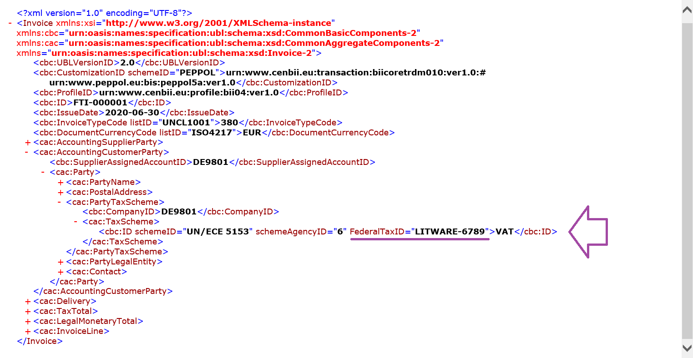
Import the latest versions of standard ER configurations
To keep the set of standard ER configurations in your Finance instance up to date, you must import new versions of them whenever they become available in the ER repository that was configured for that instance.
- Go to Organization administration > Workspaces > Electronic reporting.
- On the Localization configurations page, in the Configuration providers section, select the Microsoft tile, and then select Repositories to view the list of repositories for the Microsoft provider.
- On the Configuration repositories page, select the repository of the Global type, and then select Open. If you're prompted for authorization to connect to Regulatory Configuration Service, follow the authorization instructions.
- On the Configuration repository page, in the configuration tree in the left pane, select the Peppol Sales Invoice format configuration.
- On the Versions FastTab, select version 32.6.7 of the selected ER format configuration that has been released to support customer electronic invoices in PEPPOL BIS 3 format. For more information, see KB4490320.
- Select Import to download the selected version from the Global repository to the current Finance instance.
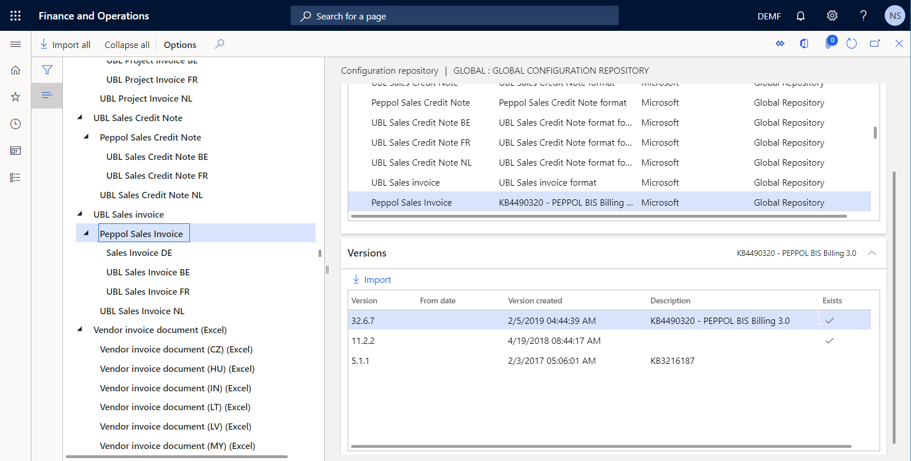
For information about how this process can be automated, see Import updated versions of ER configurations.
Review the imported ER configurations
- Go to Organization administration > Workspaces > Electronic reporting.
- On the Localization configurations page, in the Configurations section, select the Reporting configurations tile.
- Expand the Configuration components FastTab.
- In the configuration tree in the left pane, expand Invoice model. Notice that the name of Customer invoice model has been changed to Invoice model in one of the imported ER data model configurations.
- In the configuration tree in the left pane, expand Invoice model mapping. Notice that the name of Customer invoice model mapping has been changed to Invoice model mapping in one of the imported ER model mapping configurations.
- Expand UBL Sales invoice > Peppol Sales Invoice.
Notice that, in addition to the selected Peppol Sales Invoice ER format, the latest versions of other required ER configurations were imported. Because new versions of ER configurations are constantly published to the Global repository and LCS to keep the corresponding ER solutions compliant with new requirements, the latest versions of the required data model configuration and its model mapping configurations were imported.
Make sure that the following ER configurations are eventually available in the configuration tree:
Invoice model ER data model configuration:
- Version 206 (or later) contains version 24 (or later) of the data model ER component that represents the data structure of the invoicing business domain. This ER configuration has been imported as an ancestor of the latest available Invoice model mapping ER model mapping configuration.
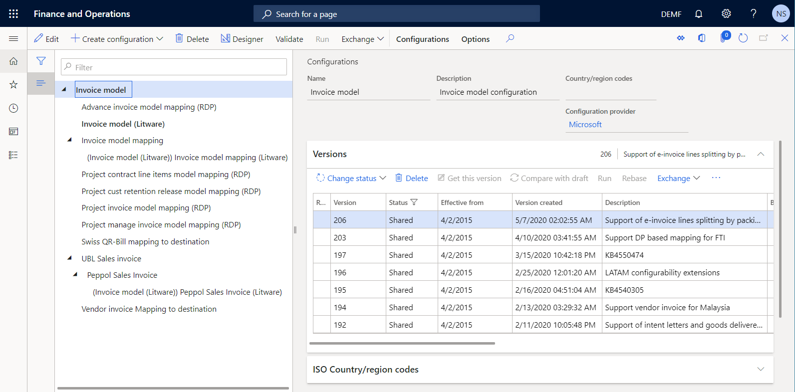
Invoice model mapping ER model mapping configuration:
- Version 206.132 (or later) has been imported as the latest implementation of version 206 of the Invoice model ER data model configuration. It contains several model mapping ER components that describe how the data model is filled in with application data at runtime.
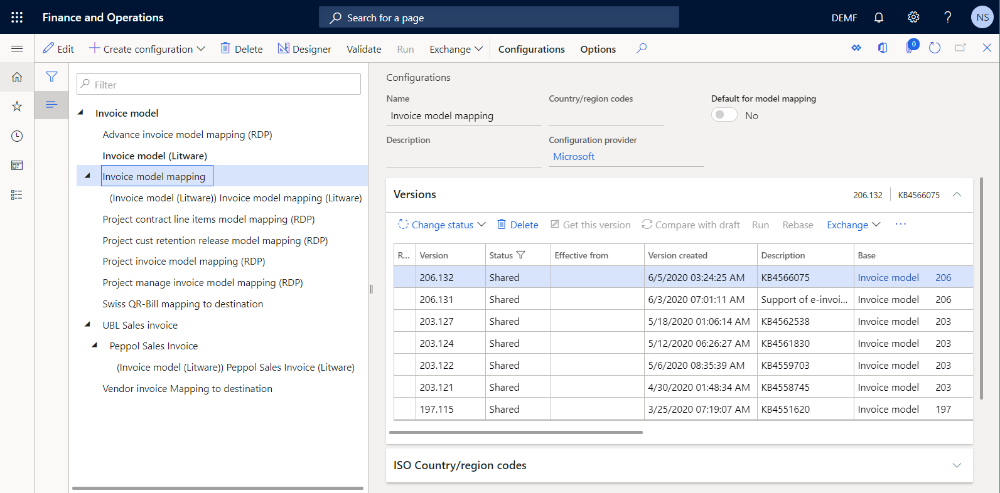
UBL Sales invoice ER format configuration:
- Version 32.6 contains the format and format mapping ER components. The format component specifies the report layout. The format mapping component contains the model data source and specifies how this data source is used to fill in the report layout at runtime. This ER format was configured to generate e-invoices in UBL format. It has been imported as a parent of the Peppol Sales Invoice ER format that was selected for import.
Peppol Sales Invoice ER format configuration:
- Version 32.6.7 contains the format and format mapping ER components that were configured to generate e-invoices in PEPPOL format.
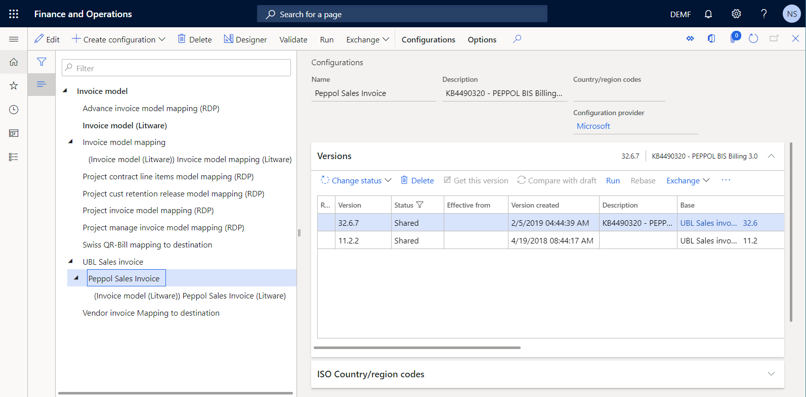
Adopt the changes to the new standard ER configurations in your custom ER configurations
Adopt your custom ER data model
Go to Organization administration > Electronic reporting > Configurations.
On the Configurations page, in the configuration tree in the left pane, expand Invoice model, and select Invoice model (Litware).
On the Versions FastTab, for draft version 50.2 of the selected data model configuration, select Rebase.
In the Target version field, confirm the selection of version 206 of the base ER data model configuration, and then select OK.
The draft version of your custom ER data model configuration is renumbered from 50.2 to 206.2 to indicate that it now contains your customization that was merged with the changes in the latest version (206) of the base ER data model configuration.
Note
The rebase action is reversible. To cancel this rebase, select version 50.1 of the Invoice model (Litware) model on the Versions FastTab, and then select Get this version. Version 206.2 will be renumbered back to 50.2, and the content of draft version 50.2 will match the content of version 50.1.
On the Versions FastTab, select Change status > Complete, and then select OK.
The status of version 206.2 is changed from Draft to Completed, and the version becomes read-only. A new editable version, 206.3, is added and has a status of Draft. You can use this version to make further changes in your custom ER data model configuration.
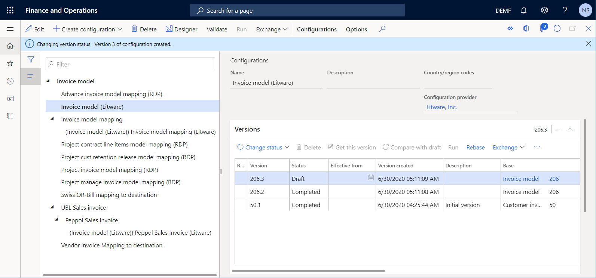
Adopt your custom ER model mapping
Go to Organization administration > Electronic reporting > Configurations.
On the Configurations page, in the configuration tree in the left pane, expand Invoice model > Invoice model mapping, and select Invoice model mapping (Litware).
On the Versions FastTab, for draft version 50.19.2 of the selected model mapping configuration, select Rebase.
In the Target version field, confirm the selection of version 206.132 of the base ER model mapping configuration, and then select OK.
The draft version of your custom ER model mapping configuration is renumbered from 50.19.2 to 206.132.2 to indicate that it now contains your customization that was merged with the changes in the latest version (206.132) of the base ER model mapping configuration.
Notice that some rebase conflicts were discovered. You must now manually resolve those conflicts.
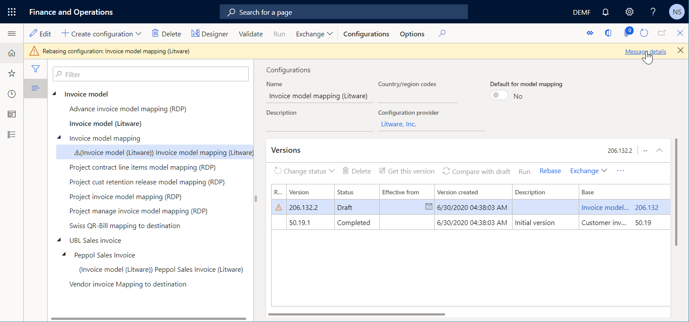
On the Action Pane, select Designer, and then, in the list of mappings, select Customer Invoice.
For each rebase conflict, select Retain own value, because you must keep the version number of your custom data model for every component that has been mentioned.
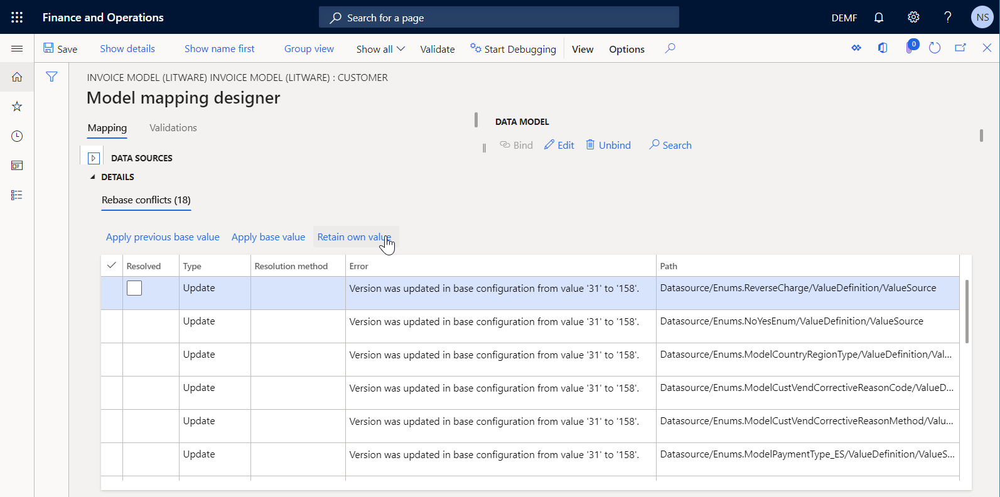
Select Save, and then close the Model mapping designer page.
In the list of mappings, select Project Invoice.
For each rebase conflict, select Retain own value, because you must keep the version number of your custom data model for every component that has been mentioned.
Select Save, and then close the Model mappings page.
Note
The rebase action is reversible. To cancel this rebase, select version 50.19.1 of the Invoice model mapping (Litware) model mapping on the Versions FastTab, and then select Get this version. Version 206.132.2 will be renumbered back to 50.19.2, and the content of draft version 50.19.2 will match the content of version 50.19.1.
On the Versions FastTab, select Change status > Complete, and then select OK.
The status of version 206.132.2 is changed from Draft to Completed, and the version becomes read-only. A new editable version, 206.132.3, is added and has a status of Draft. You can use this version to make further changes in your custom ER model mapping configuration.
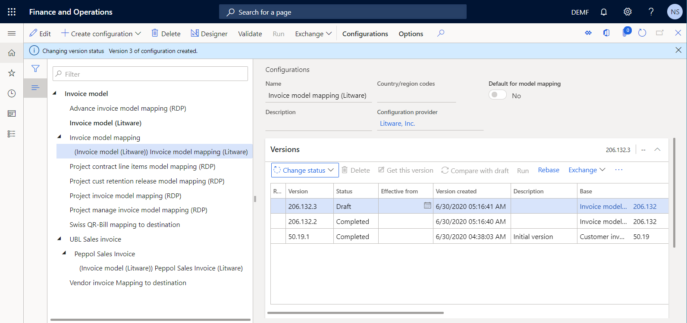
Adopt your custom ER format
Go to Organization administration > Electronic reporting > Configurations.
On the Configurations page, in the configuration tree in the left pane, expand Invoice model > UBL Sales invoice > Peppol Sales Invoice, and select Peppol Sales Invoice (Litware).
On the Versions FastTab, for draft version 11.2.2.2 of the selected format configuration, select Rebase.
In the Target version field, confirm the selection of version 32.6.7 of the base ER format configuration, and then select OK.
The draft version of your custom ER format configuration is renumbered from 11.2.2.2 to 32.6.7.2 to indicate that it now contains your customization that was merged with the changes in the latest version (32.6.7) of the base ER format configuration.
Notice that some rebase conflicts were discovered. You must now manually resolve those conflicts.
On the Action Pane, select Designer.
For each rebase conflict, select Retain own value, because you must keep the version number of your custom data model for every component that has been mentioned.
Select Save.
On the Mapping tab, select the Invoice data source of the Model type, and then select Edit.
In the Version field, select version 2 of your custom data model, and then select OK.
Select Save.
Note
The rebase action is reversible. To cancel this rebase, select version 11.2.2.1 of the Peppol Sales Invoice (Litware) format on the Versions FastTab, and then select Get this version. Version 32.6.7.2 will be renumbered back to 11.2.2.2, and the content of draft version 11.2.2.2 will match the content of version 11.2.2.1.
Close the Format designer page.
On the Versions FastTab, select Change status > Complete, and then select OK.
The status of version 32.6.7.2 is changed from Draft to Completed, and the version becomes read-only. A new editable version, 32.6.7.3, is added and has a status of Draft. You can use this version to make further changes in your custom ER format configuration.
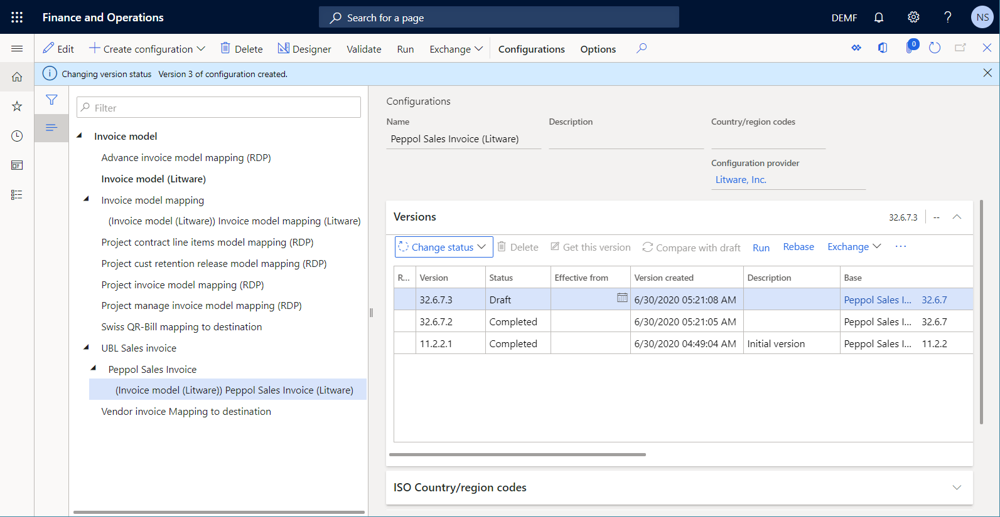
Process a customer invoice by using new versions of the custom ER configurations
Select and send a posted invoice
Go to Accounts receivable > Invoices > All free text invoices.
On the Free text invoice page, select the invoice that you previously added and posted.
On the Action Pane, in the Document group, select Send > Original.
Note
Because you now have two versions of the Peppol Sales Invoice (Litware) ER format configuration, and neither version has an effective date value, the latest version is used to generate an e-invoice.
Close the Free text invoice page.
Analyze a generated e-invoice
Go to Organization administration > Electronic reporting > Electronic reporting jobs.
On the Electronic reporting jobs page, select the most recent record that has the task description Send the eInvoice XML.
Select Show files to access the list of generated files.
Select Open to download the e-invoice XML file that is generated.
Analyze the e-invoice XML file. Notice that, in accordance with your customization, the customer tax schema still contains the custom FederalTaxID XML attribute in addition to the schemeID and schemeAgencyID XML attributes. Additionally, because the changes in the new version of the base UBL Sales invoice format were merged with your customization, the text of the cbc:CustomizationID XML element has been changed from
urn:www.cenbii.eu:transaction:biicoretrdm010:ver1.0:# urn:www.peppol.eu:bis:peppol5a:ver1.0tourn:cen.eu:en16931:2017#compliant#urn:fdc:peppol.eu:2017:poacc:billing:3.0.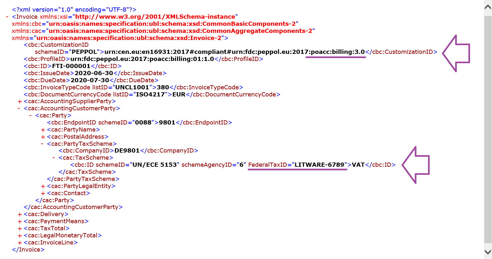